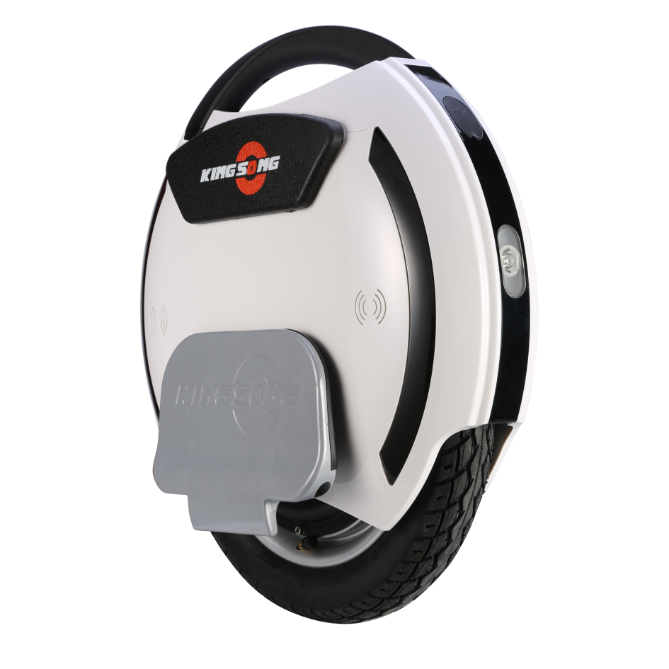
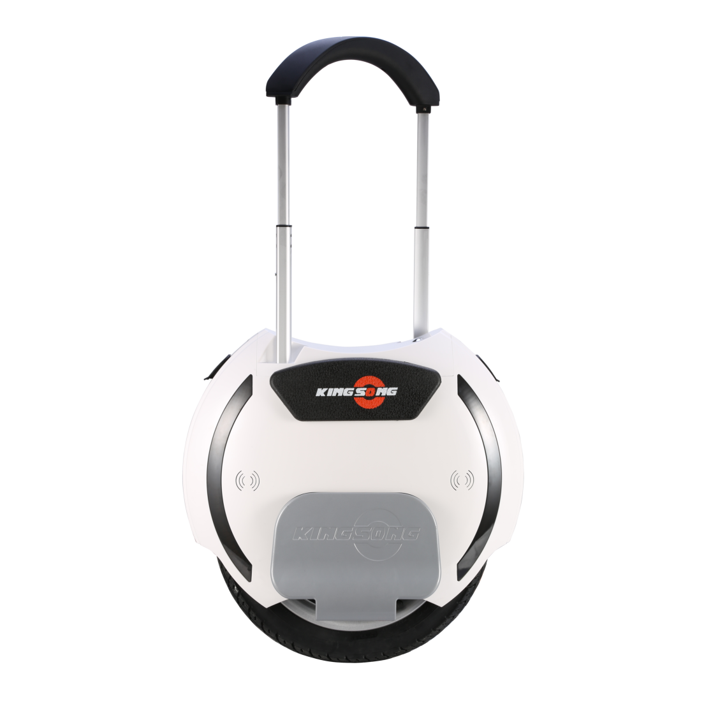

Find your balance.
One wheel beneath your feet. A skill to learn, a different rhythm to discover.
● A PAUSE IN THE JOURNEY
Small wheel. Big possibilities. We brought electric unicycles to curious riders in India. The business has closed, but the curiosity hasn’t.
Interested in what’s next? ↗No orders right now. Just a little possibility.

● Where we are today: Unibalance is closed. We’re collecting interest in a possible future return. There is no reopening date or stock available.
01 / THE EXPERIENCE
For the curious. For the ones who take the long way home. For anyone who thinks moving around could feel a little different.
One wheel beneath your feet. A skill to learn, a different rhythm to discover.

A compact shape that makes you look twice.
The business is closed. Our interest in electric mobility is still very much alive.
Be part of the next conversation ↗02 / A LOOK BACK
A few favourites from our original collection. These photographs are part of our story; the models shown are not for sale.
03 / YOUR QUESTIONS
Our original questions, with answers updated for where we are today.
No. Unibalance has closed its business. We are only collecting interest in a possible future return. Registering does not reserve a product or commit you to a purchase.
Surface conditions, wheel design and rider experience all matter. Potholes and uneven surfaces can be hazardous; don’t treat an electric unicycle as suitable for every terrain. Follow the manufacturer’s guidance.
Do not assume an electric unicycle can travel with you. Check the airline’s current policy for your exact device and battery before booking or travelling.
We are not arranging test rides or regular meetups. You can check the Unibalance Instagram for any future community updates.
The original site linked to this introduction on YouTube. Use it as a starting point alongside your model’s instructions and suitable protective equipment.
You give us permission to contact you about a possible Unibalance return. There is no reopening date, payment or purchase commitment. To ask for your details to be removed, email unibalance.in@gmail.com.
No matching questions. Try “stock” or “test ride”.
04 / WHAT IF THERE’S A NEXT CHAPTER?
If you’d like to hear from us should Unibalance return, leave your details. Your interest helps us understand what a future chapter could look like.
↗ No payments. No reservations.
Just a way to stay in touch.